Ровно — питч-дек для стартапа
Вымышленный стартап: сервис подсказывает кофейне, сколько выпечки печь каждое утро. Нужна презентация для первых встреч с инвесторами.
- ФорматPowerPoint и PDF
- Объём12 слайдов, 16:9
- ГрафикиВстроенные, редактируются
- ШрифтArial — открывается у всех
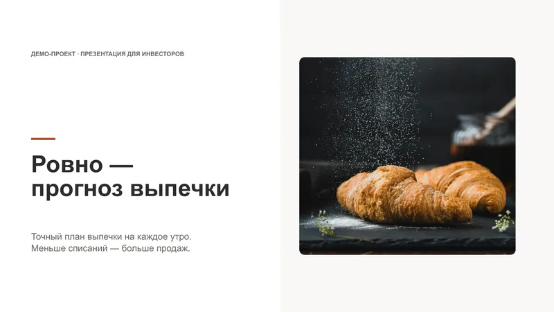
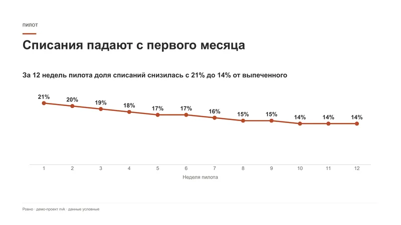
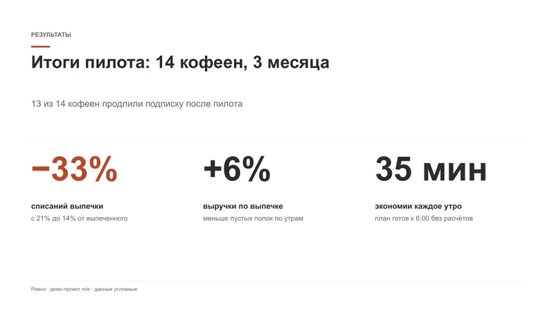
Задача
Стартап выходит на первый раунд и привлекает 30 млн ₽. За несколько минут встречи инвестор должен понять проблему, увидеть результаты пилота и экономику.
Презентация должна быть в стиле бренда и легко правиться под каждую встречу.
Решение
Классическая структура питч-дека: на каждом слайде одна мысль.
- Проблема
- Решение
- Пилот
- Рынок
- Конкуренты
- Команда
- План
- Инвестиции
Заголовок — это вывод
Не «Результаты пилота», а «Списания падают с первого месяца».
Живые графики
Диаграмма и таблица сделаны средствами PowerPoint: цифры правятся без дизайнера.
Стиль клиента
Терракотовый цвет и фото выпечки — как будто это фирменный стиль стартапа.
Честная пометка
На обложке и внизу слайдов написано, что это демо-проект и данные условные.
Результат
12 слайдов в PowerPoint и PDF. Всё редактируется: тексты, диаграмма и таблица.
Фото — Unsplash: бесплатная лицензия, в том числе для коммерческих проектов.


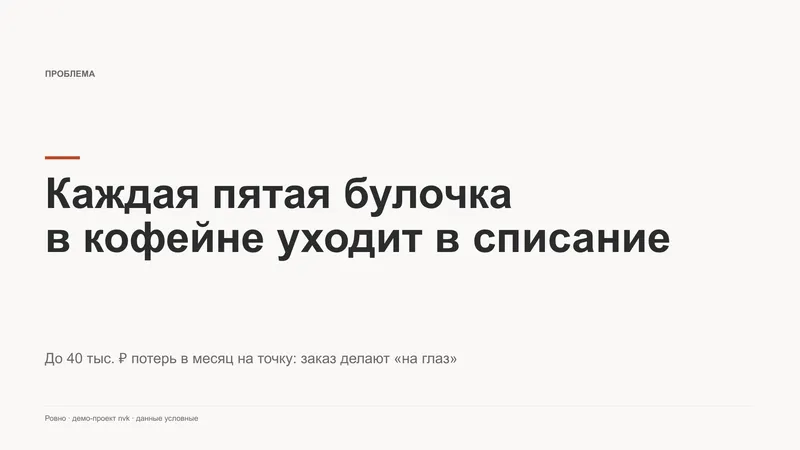

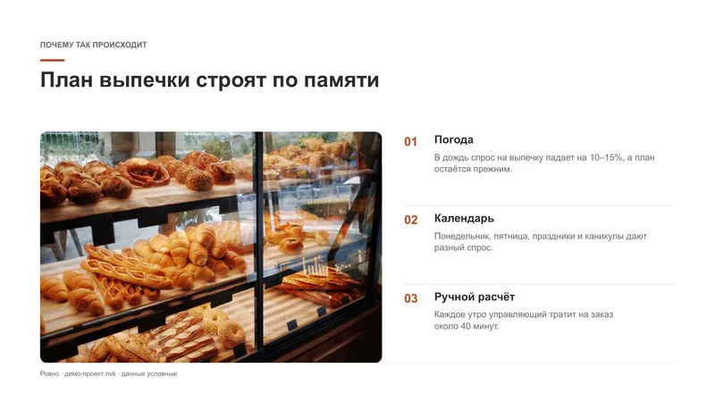

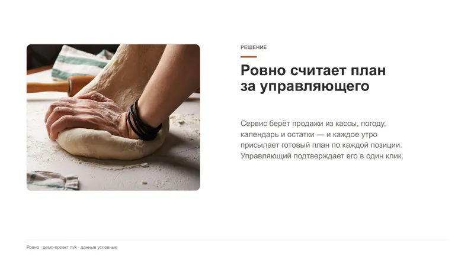

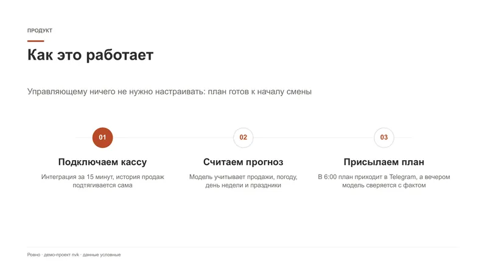


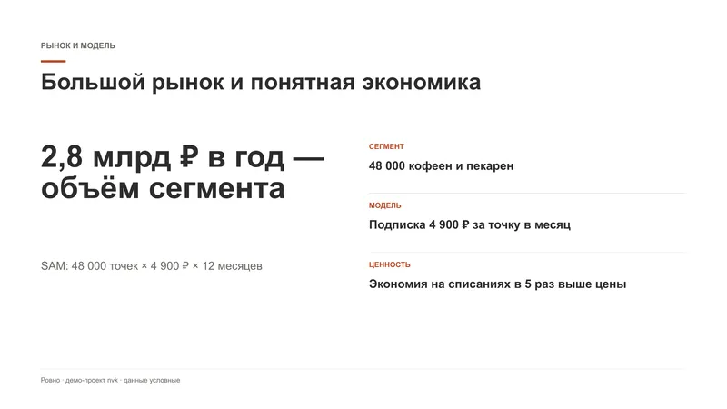

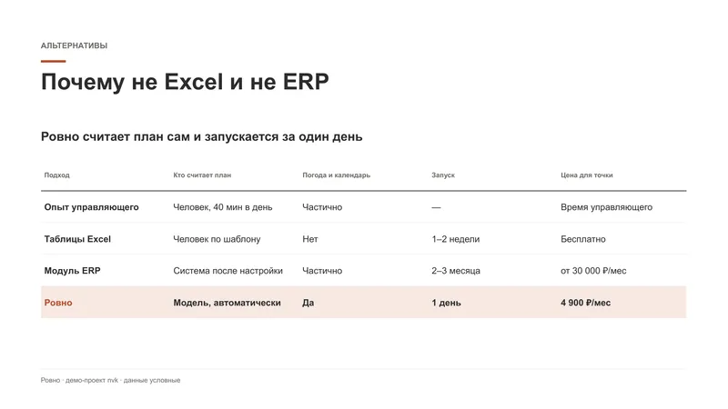

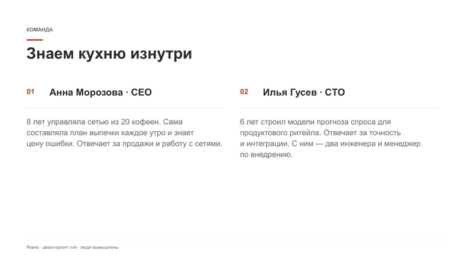

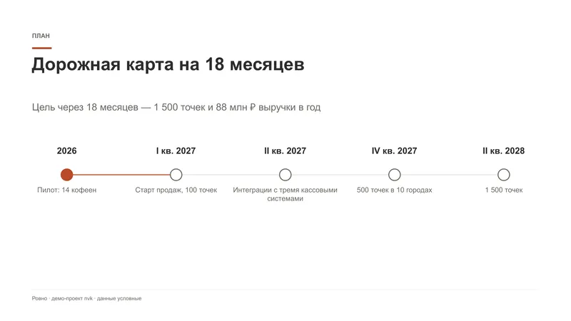

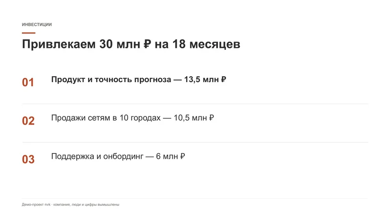
Нужна такая презентация?
Расскажите о задаче — предложу структуру и назову цену и срок до начала работы.